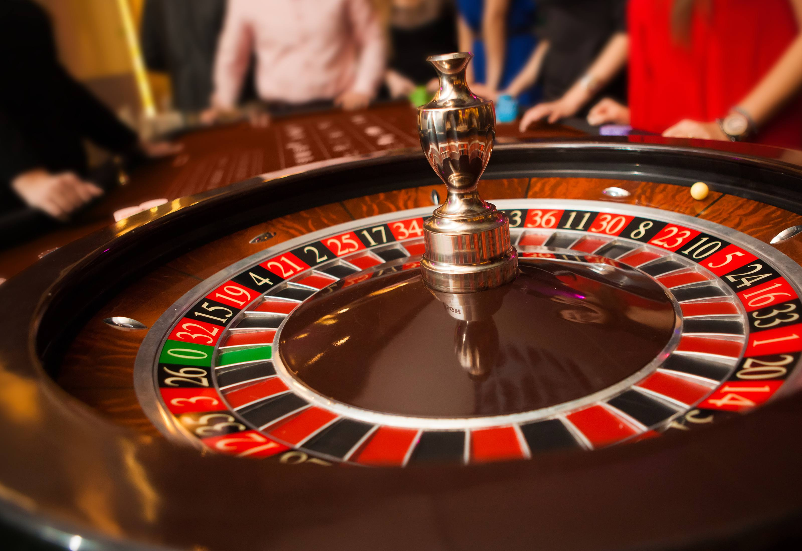

<ion-header>
	<ion-toolbar>
		<ion-title>
			{{ name }}
		</ion-title>
		<ion-icon name="close-circle" size="large" slot="end" (click)="dismiss()"></ion-icon>
	</ion-toolbar>
</ion-header>

<ion-content fullscreen>
	<ion-card *ngFor="let n of [0, 1, 2, 3, 4, 5]">
		
		<ion-card-header>
			<ion-card-subtitle>Destination</ion-card-subtitle>
			<ion-card-title>Madison, WI</ion-card-title>
		</ion-card-header>
		<ion-card-content>
			Founded in 1829 on an isthmus between Lake Monona and Lake Mendota, Madison was named the capital of the Wisconsin Territory in 1836.
		</ion-card-content>
	</ion-card>
</ion-content>
